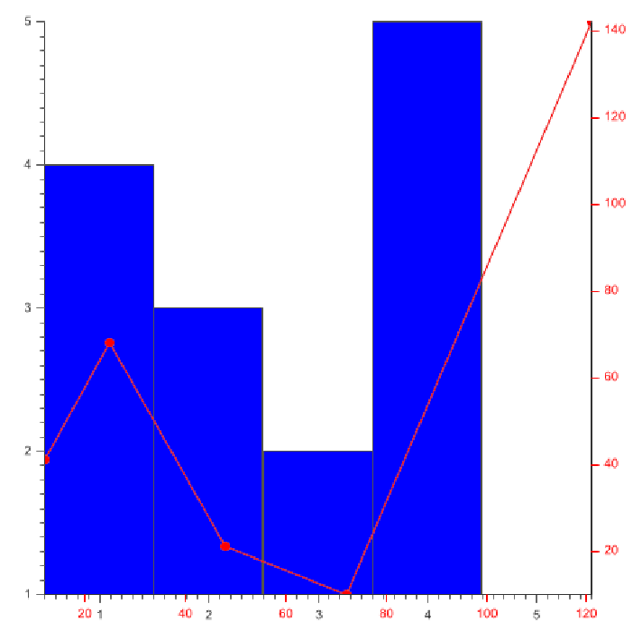

4.4.1 Setting axis
Axis can be set at the chart or at the plot level. Axis set at the chart level will be
used by all plots which don’t have any specific axis.
To set the default X and Y axis, use the following methods from the Chart2D
class :
public void setDefaultXAxis(Axis axis);
public void setDefaultYAxis(Axis axis);
The Axis class provides two constructors :
/** * Constructs a default bottom horizontal axis */ public Axis();
/** * @param position : an int representing the Axis position. * It is obtained from int byte to byte OR operation between the following constants : * * Axis.LEFT * Axis.RIGHT * Axis.BOTTOM * Axis.TOP * Axis.VERTICAL * Axis.HORIZONTAL */ public Axis(
int position) ;
For example, a right vertical axis would be created as :
new Axis(Axis.RIGHT | Axis.VERTICAL);
The Axis class also proposes two helper methods to get a bottom X axis and a
left Y Axis :
/** * @return a default horizontal axis instance */ public static Axis simpleXAxis()
/** * @return a default vertical axis instance */ public static Axis simpleYAxis()
The following snippet can then be used to provide simple axes to your charts
:
chart.setDefaultXAxis(Axis.simpleXAxis());
chart.setDefaultYAxis(Axis.simpleYAxis());
To set axes for a specific plot, you can use the Plot methods
public void setXAxis(Axis axis);
public void setYAxis(Axis axis);
Below is an example of two plots on the same chart with different axes
:
Chart2D chart =
new Chart2D("500px","500px");
//Constructing the Column plot BarPlot<Integer> columns =
new BarPlot<Integer>(BarPlot.PLOT_TYPE_COLUMNS);
//Constructing its serie Serie<Integer> columnsSerie =
new Serie<Integer>();
columnsSerie.addData(4);
columnsSerie.addData(3);
columnsSerie.addData(2);
columnsSerie.addData(5);
columnsSerie.addData(1);
//Simple Serie options, see the "Series" section for more info columnsSerie.setFillColor("blue");
//We add the serie to the column plot columns.addSerie(columnsSerie);
//Constructing the line plot Plot2D<Point> lines =
new Plot2D<Point>(Plot2D.PLOT_TYPE_MARKERS_LINES);
//Constructing its series from points Serie<Point> linesSerie =
new Serie<Point>();
linesSerie.addData(
new Point(12.,41.));
linesSerie.addData(
new Point(25.,68.));
linesSerie.addData(
new Point(48.,21));
linesSerie.addData(
new Point(72,10));
linesSerie.addData(
new Point(121,142));
//Simple Serie options, see the "Series" section for more info linesSerie.setStrokeColor("red");
//We add the serie to the column plot lines.addSerie(linesSerie); //The plot are added to the chart chart.addPlot(lines);
chart.addPlot(columns);
//The chart will have default X and Y axis chart.setDefaultXAxis(Axis.simpleXAxis());
chart.setDefaultYAxis(Axis.simpleYAxis());
/* We override this setting for the line plot * The getLineXAxis and getLineYAxis are not shown * here, but will be presented in the "Axis options" section. * They only return new, customized for the example, axis. */ lines.setXAxis(getLineXAxis());
lines.setYAxis(getLineYAxis());
